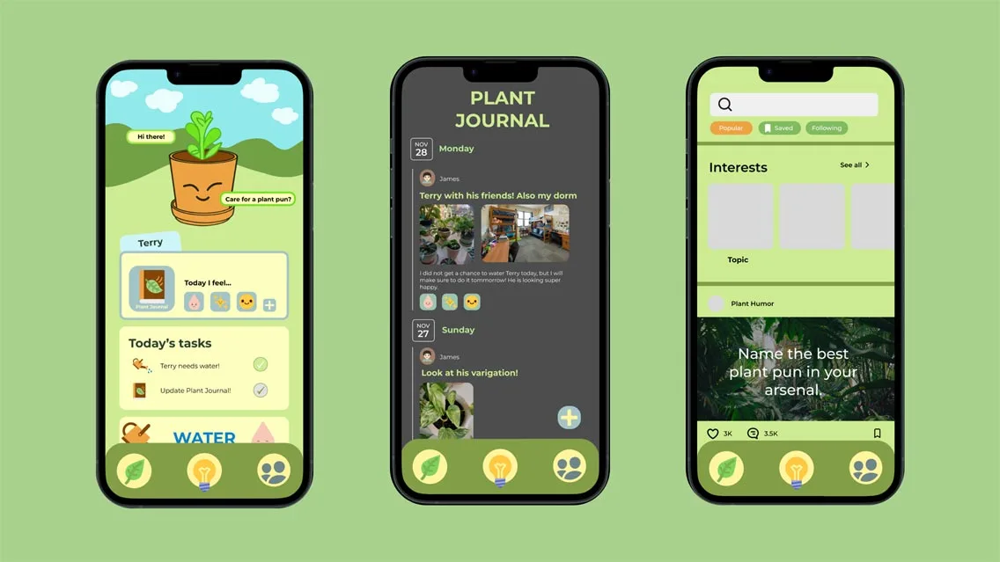
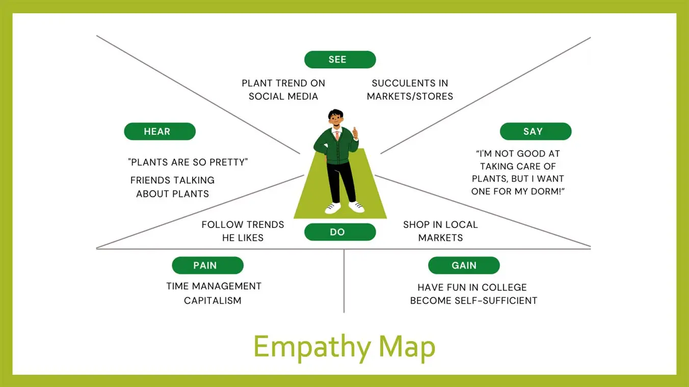
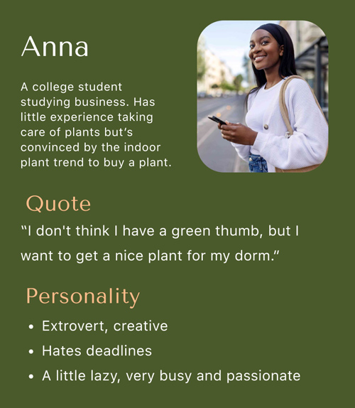
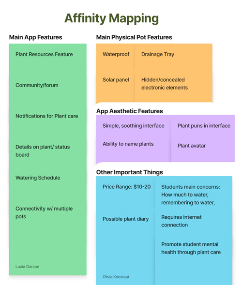
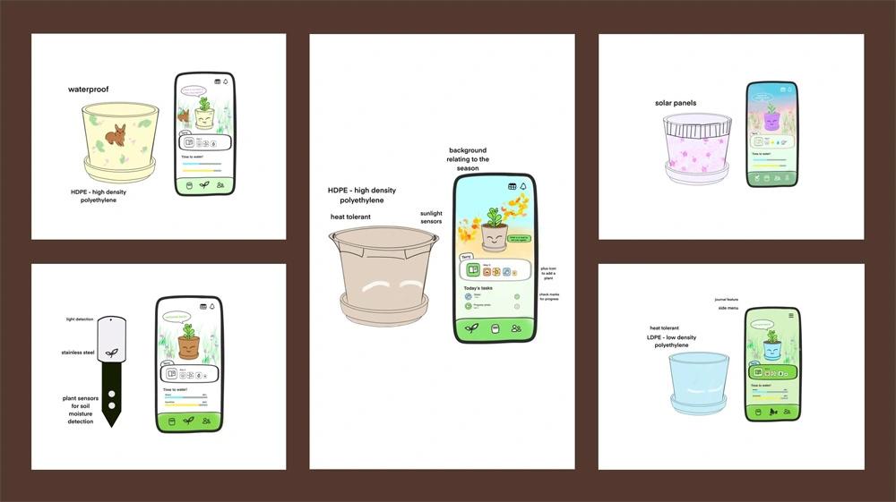
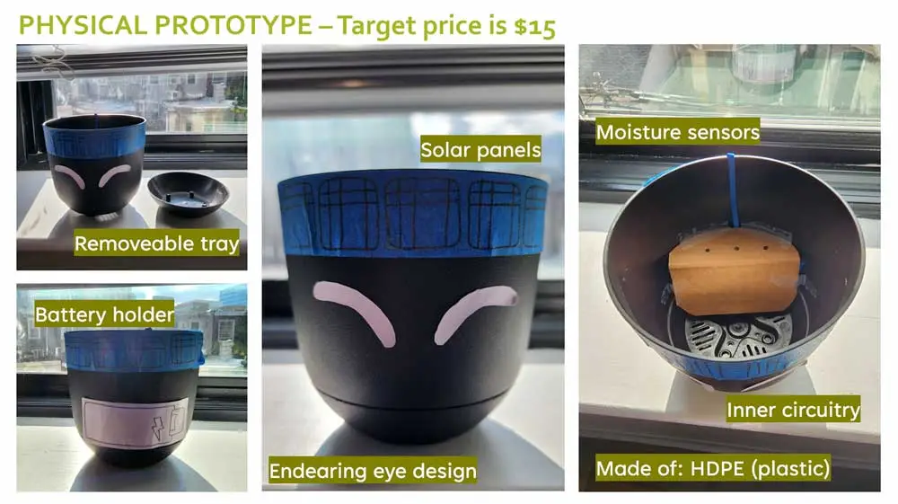
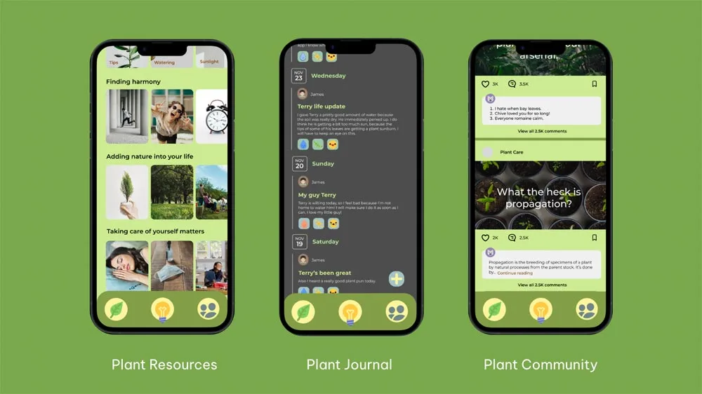
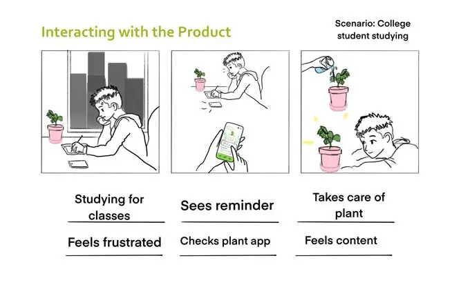
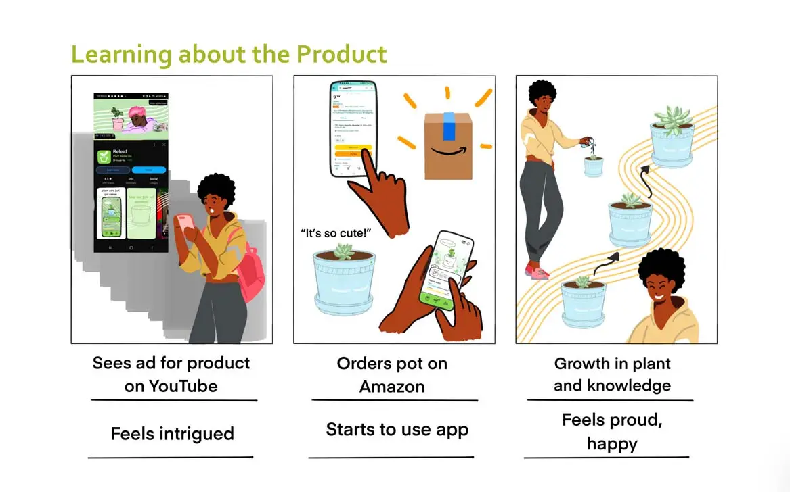

Best Fronds Multimedia Design
Overview
Collaborating with a fellow team member I researched, iterated and designed a physical product and Figma app prototype targeting the lack of botanical literacy in college students.
Intro
Over a span of 4 weeks, I collaborated with a fellow UXID student to create a physical product and app prototype that seamlessly worked together to solve a problem we identified in college students—a lack of knowledge of plant care. After some research into this topic and feedback from our professor, we determined a problem statement:
College students need a device to help take care of indoor plants—and cultivate a relationship with nature—because they struggle to keep them alive and need to take care of plants for mental health benefits.
The User
Using past studies and conducting a Google form survey, we identified the target user for our multimedia design were college students, who are interested in plant care for aesthetic purposes and to cultivate a relationship with nature that will improve their mental health.
Below are an empathy map and user persona I drafted to better understand the target user's mindset.


Process
Next, we began the process of ideating and creating prototypes. In my ideations below I wanted to create a friendly, soothing app interface that would ease the user into plant care—and a creative, inexpensive idea for the physical product that would seamlessly connect to our digital solution.


After receiving constructive feedback from our classmates and professor, our multimedia design solution was the Best Fronds Plant Monitoring Pot and Best Fronds app.

The Best Fronds Plant Monitoring Pot allows the user to keep track of a plant's water and sun levels, as well as improve the user's stress and mood through plant interaction. Further below is our low-fidelity prototype made with simple materials.
The Best Fronds app prototype was designed in Figma and had two aims: to notify the user of the current state of their plant and to better the user's mental health.

In addition to the app's cute avatar and navigation menu, I designed a Journaling page to document the plant's progress and allow the user to express themselves, a Plant Community page to learn more about plant care and connect with other plant lovers, and a Plant Resources page for mental health media and plant care support.
Throughout this process, I designed two storyboards communicating how our products would work together, and how easily users can learn about and benefit from our design.


Reflecting on Best Fronds
This was the first time I utilized the design thinking process to deliver a multimedia design. While I feel we were successful in creating a product that will simultaneously increase the botanical literacy of the user and their mental health, I would go back and make improvements in our approach and final design if I could.
- I would look at improving the color scheme of our app prototype to increase its readability, the colors may be a bit too muted.
- I would also delve more into market research and look into whether it would be possible to make the physical product we suggested with the target price range of the product that we proposed.
- If I had more time, I would also engage in user testing with our app, to understand how a college student would interact with our prototype, and how to better improve our user interface based on that.
Overall, I'm grateful my Product Design class gave me the chance to tackle a problem through a multimedia design solution, and even more excited by the opportunities I'll have to design and iterate like this in the future.